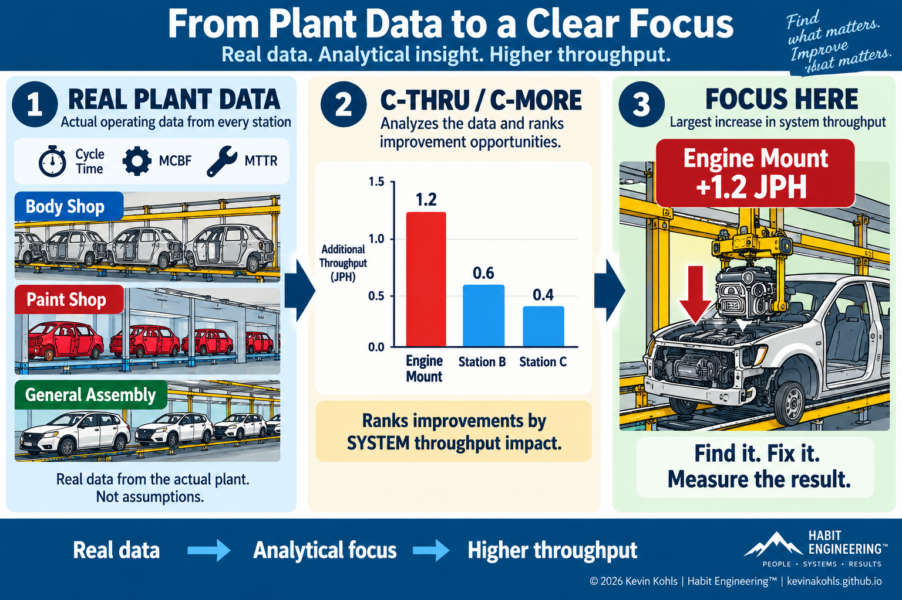
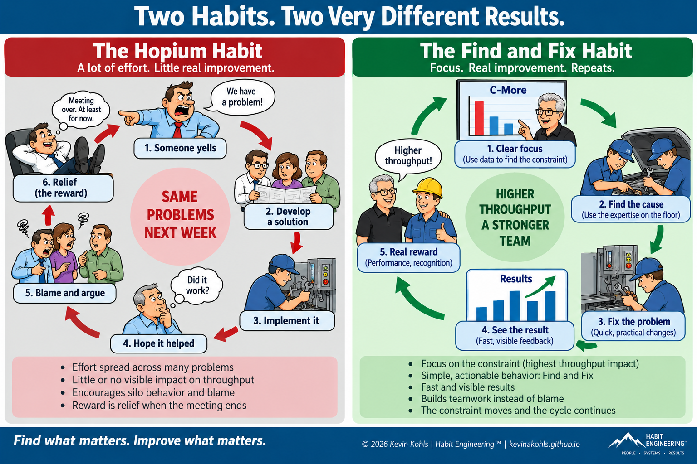
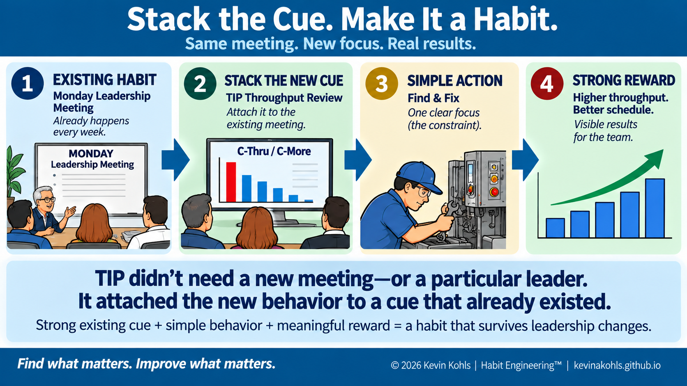
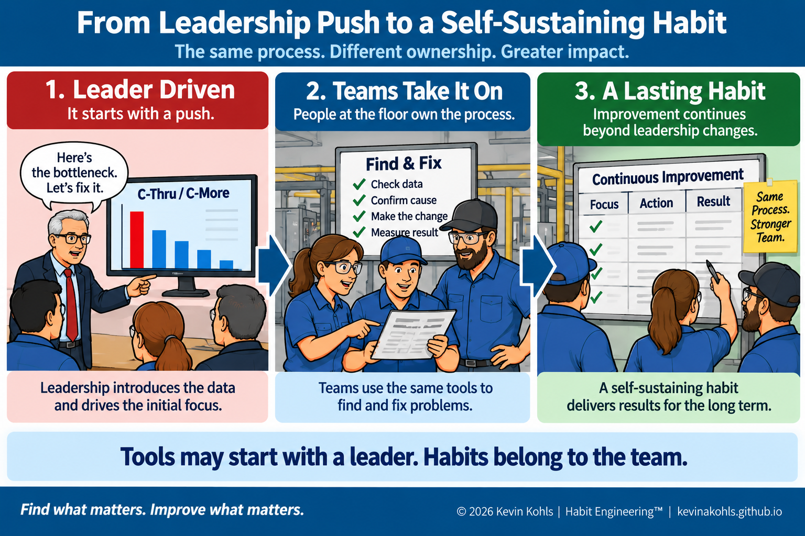

Find What Matters. Improve What Matters. Make the Improvement a Habit.
Most improvement methods are good at identifying what should change. Habit Engineering adds another question: what must people repeatedly do for that improvement to survive?
A Seven-Step Method
Habit Engineering combines system focus with behavioral design. Find what is limiting the goal. Identify the behavior required to change it. Understand the old habit competing with that behavior. Then create the cues, actions, rewards and reinforcement that make the better behavior easier to repeat.
1. Define the Goal
Improvement without a clearly defined goal quickly becomes activity.
At General Motors' Detroit/Hamtramck plant, the goal was straightforward: make the production schedule.
The eventual design target was 450 jobs per shift, although we started with a much lower bar—around 375. Jobs per day told us whether we made schedule. Jobs per hour gave us the more useful operating measure because overtime and available production time varied.
The objective was not to maximize every machine, generate the largest number of improvement events, or make every department look efficient. It was to produce enough vehicles to meet the schedule.
Before trying to change behavior, make the desired result unmistakable. If people cannot see what winning means, almost any activity can be described as improvement.
2. Find the Constraint
Once the goal is clear, the next question is: what is preventing us from achieving more of it?
At Hamtramck, we used a program called C-Thru. A later version became C-More—essentially C-Thru 2.0.
The method was deterministic. It used actual station data—cycle time, Mean Cycles Between Failure (MCBF), and Mean Time To Repair (MTTR)—to calculate where a statistically significant improvement would create the greatest increase in system throughput.
The largest-impact station was effectively the bottleneck. But the analysis could also show a non-bottleneck that blocked or starved the constraint often enough that fixing it would increase total throughput.
Focus makes the desired behavior easier. “Continuously improve” leaves thousands of possible actions. “Improve this station” dramatically reduces ambiguity.

3. Identify the Critical Behavior
A model does not improve a factory. People do.
Once C-Thru identified where additional throughput could be created, the required behavior eventually became two words:
Find the current throughput constraint. Find what is causing its loss. Fix it. Then do it again.
Early in TIP, I owned the throughput section of the Monday plant leadership meeting and gave the report myself, with the Area Managers supporting the discussion and providing updates from their areas. As the process matured, the details of exactly what was being fixed became less important than maintaining the focus and ensuring the right people were working on the right station.
Investigations were often led by Tech Support/Maintenance, which had the skilled trades needed for most changes. Many problems were obvious through direct observation, cycle time, MCBF or MTTR. Often the needed repair was already sitting in a large maintenance backlog. TIP simply changed the priority.
The critical behavior should be as simple as possible. Complex processes increase friction. “Find and Fix” was memorable, observable and actionable.
4. Understand the Old Habit
TIP was not being installed into an organization without habits. It was competing with an existing one.
I eventually came to call that old pattern Hopium.
The old loop was familiar: someone yelled about a problem, people developed a solution, implemented it and hoped it helped. Because the issue was often outside the constraint, there might be little visible system impact. Then the weekly staff meeting arrived. Departments blamed one another, demanded resources, defended their own performance—and when the meeting finally ended, relief itself became the reward.

Never design the new habit without understanding the reward supplied by the old one. If the old behavior still produces the stronger or more dependable reward, the old behavior has an enormous advantage.
5. Engineer the New Habit
Looking backward, this is where TIP becomes especially interesting. We never sat down and said, “Let's engineer a habit.” But that is substantially what happened.
The Cue
The Monday plant leadership meeting already existed. TIP did not create another meeting. We stacked the throughput review onto a reliable organizational cue that was already part of running the plant.
That mattered because the cue belonged to the process, not to any particular Plant Manager or senior leader.
The Action
C-Thru/C-More reduced the ambiguity: here is where improvement matters most. The action remained simple: Find and Fix.
The Reward
The reward was not a slogan. The equipment behaved differently.
Cycle time improved. MCBF went up. MTTR went down. Throughput increased. Schedule attainment improved.
For the people doing the work, technical feedback was often immediate. Many physical changes had to wait until the weekend, but once made, the data showed the result quickly. Then the plant leadership team saw the system-level effect at the next weekly meeting.

A new habit does not always need a new cue. One of the strongest approaches is to stack the new behavior onto a cue that already occurs reliably.
6. Repeat & Reinforce
This is where a process begins becoming a habit.
One of my favorite examples involved a loader for painted bodies. Skilled trades realized that part of the cycle contained unnecessary pause time. Moving a limit switch could shorten the cycle.
They made the change first, then wrote several versions of a suggestion because they wanted to make sure at least one qualified for GM's suggestion-award program.
The Plant Engineer was not enthusiastic about paying an award for something so simple. My argument was equally simple: they saw the problem, developed the solution, implemented it, and the result was real. The cost of one electrician on a Saturday was tiny compared with the throughput value created.
They got paid. After that, implementation of bottleneck suggestions increased.
TIP also had multiple reinforcing rewards. The people doing the work could see technical improvement quickly. The data confirmed it. The weekly leadership meeting made the system-level effect visible. Schedule attainment improved. Successful work could be recognized publicly. And sometimes the people responsible received a financial suggestion award.
Within roughly two or three months, another shift became visible. Instead of:
we increasingly heard things like:
We had not launched a culture-change initiative. The behavior changed first. The culture started following it.
Do not ask people to believe in a new culture and then hope behavior follows. Create conditions in which the desired behavior repeatedly produces a meaningful reward.
7. Measure the Result
Every loop has to return to the goal: did the system actually improve?
TIP made this easier to defend because we intentionally used conservative financial assumptions.
We commonly used a range of roughly $250,000–$300,000 per additional job per day per year. The actual financial impact was often higher, but the conservative range was easier to believe and defend. That mattered.
TIP ultimately expanded across GM and generated approximately $2 billion in documented financial impact—roughly $3 billion in today's dollars.
The data created for C-More also had another major effect. It gave us observed performance instead of wishful assumptions about future plants. Actual downtime was often much worse than expected, but now it was defendable with real data.
That data made simulation of future plants much more accurate and helped prevent poor design decisions, including removing equipment simply to meet a budget target.
New-plant ramp-up time dropped from roughly six months to six weeks. The financial impact of that faster ramp was enormous, but we did not include speculative “shadow” values in TIP's documented financial result.
When the Habit Starts Running Without You
Perhaps the strongest evidence that TIP had become a habit was that it eventually required less leadership intervention.
Sharp tradespeople could take the weekly bottleneck report, go observe the operation, and begin identifying improvements themselves. Plants had Throughput Improvement Coordinators who could perform other responsibilities when TIP was not needed and return to the process when required.
At Saturn, one organization went further. They took pride in predicting where the next bottleneck would move and began working on that opportunity as well.

TIP Wasn't Perfect
It would be easy to rewrite history and describe TIP as a fully developed Habit Engineering system. It wasn't.
TIP was created to improve throughput and make the production schedule. And it succeeded in that lane.
But the production target eventually became a hard stopping point. Once sufficient throughput existed to make schedule, the reward for additional throughput diminished. We were not explicitly optimizing Net Profit or ROI indefinitely.
Nor did TIP eliminate organizational silos. TAS worked alongside—and sometimes in conflict with—other improvement organizations and GM's developing GMS/TPS efforts.
At one plant, throughput improved faster than the number of vehicles requiring repair declined. Quality itself had improved, but because more total vehicles were being produced, the visible repair inventory grew. Someone looking only at the repair lot could conclude that quality was being sacrificed for throughput—even though the quality measure had improved.
That is a systems lesson Habit Engineering cannot ignore. A strong habit is not enough. We still have to ask whether the total system improved and whether the constraint or undesirable effects moved somewhere else.
The Hardest Constraint May Be Human
Improvement does not occur in an organizational vacuum.
People have responsibilities, incentives, status, expertise and professional identities. A new method can imply that the metric someone has spent years optimizing matters less than they believed. It can challenge authority. It can threaten reputation. It can rewrite the rules by which a successful leader became successful.
Habit Engineering therefore has to consider more than the desired new behavior. It must understand the existing habit, the reward behind it, and the identity attached to it.
This may be one reason so many technically excellent improvement programs fail: the technical process is designed, but the competing human system is not.
What TIP Taught Me About Habit Engineering
Years later, after studying habit formation more deliberately, I realized that TIP had inadvertently contained many of the elements I was trying to describe.
Make the production schedule.
The Monday leadership meeting.
Use analysis to identify where throughput can increase.
Find and Fix.
The equipment and data showed whether the change worked.
Higher throughput, better schedule attainment and visible results.
Recognition and suggestion awards.
Every week, whether or not a particular leader was present.
We had a strong cue, a simple bottleneck analysis process with a single result—focus on this station—talented people who knew how to fix the problems, and immediate and often dramatic increases in throughput. That is a strong reward rarely seen in continuous improvement.
Habit Engineering Makes It Deliberate
We should not have to get lucky. Habit Engineering deliberately asks the questions that TIP answered partly by circumstance.
Find what matters.
Improve what matters.
Make the improvement a habit.